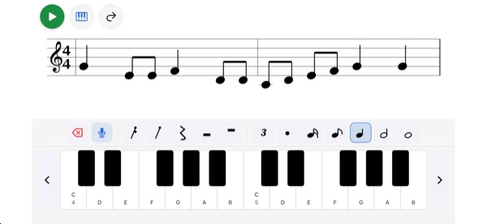
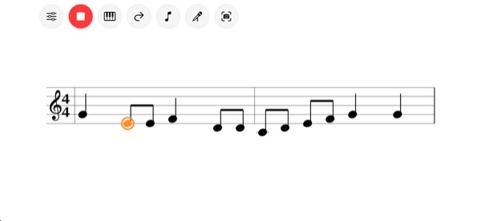
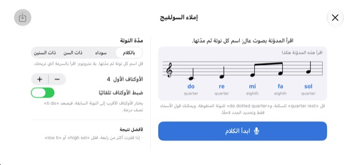

لا تعدّ الإيقاع في رأسك.
اسمعه.
انقل المازورتين اللتين تُربكانك إلى المدرج واضغط تشغيل. بعد عدّ تمهيدي لمازورة واحدة، يعزفهما StaffSinger مع المترونوم بإيقاعهما وطبقاتهما كما هي.
الكتابة والاستماع مجانًا. لأجهزة iPhone وiPad.

اكتب بضع نوتات واستمع
اضغط مطوّلًا على المدرج، وحرّك إصبعك للأعلى أو للأسفل لتغيير الطبقة، ثم ارفعه لتضع النوتة. اضغط تشغيل لتسمع عدًّا تمهيديًا لمازورة ثم العزف. ارفع الصوت، فهناك صوت.
ضاع منك العدّ في منتصف المازورة مجددًا؟
ذات سن منقوطة، ثم ذات سنين، ثم ثلاثية بعدها مباشرة، فيتعثر النقر على ركبتك. وكثيرًا ما لا يكون هناك بيانو قريب، كما في الليلة التي تسبق التمرين. انقل هاتين المازورتين إلى StaffSinger فيعزفهما لك تمامًا كما كُتبتا.
اسمع الإيقاع والطبقة بدقة
بعد عدّ تمهيدي لمازورة، تُعزف الموسيقى على نقرات المترونوم وتتلوّن النوتة المسموعة بالبرتقالي. اضبط السرعة بين 40 و200 BPM، واختر الميزان 4/4 أو 3/4 أو 2/4 أو 6/8 أو 2/2 أو 3/8.
ضع النوتات فوق بعضها في الزمن نفسه فتُسمع معًا كتآلف، واكتب حتى ثلاثة أصوات. مفتاح صول ومفتاح دو ومفتاح فا ودليل السلّم كلها متوفرة.

قل أسماء النوتات فتُكتب
بعد أربع نقرات من المترونوم، قل do re mi بصوت مسموع على الزمن فتنزل على المدرج. إذا نطقت على الإيقاع يُلتقط الإيقاع أيضًا، بالسوداء أو ذات السن أو ذات السنين. وقل rest للسكتة.
تُقال الأسماء بالإنجليزية. يجري التعرّف على الكلام داخل جهازك ولا يُحفظ أبدًا.

ثلاث خطوات للبدء
- 1
اختر المازورات الصعبة
يُفتح التطبيق على مدرج فارغ من مازورتين.
- 2
اكتب النوتات
اضغط على المدرج أو اعزف على مفاتيح البيانو.
- 3
اضغط تشغيل
عدّ تمهيدي، ثم عزف مع المترونوم.
الكتابة والاستماع مجانًا
مجانًا
- الإدخال على المدرج ولوحة بيانو بمدى أوكتافين
- العزف مع العدّ التمهيدي والمترونوم
- التآلفات وثلاثة أصوات
- دليل السلّم وثلاثة مفاتيح
- الصور المرجعية
- تجربة الإملاء والتدوين من الصور 3 مرات لكل منهما
StaffSinger Pro
- إملاء السولفيج (انطق على الزمن ليُلتقط الإيقاع أيضًا)
- تدوين تلقائي من الصور (تجريبي)
اختر اشتراكًا أسبوعيًا أو شهريًا أو سنويًا، أو ادفع مرة واحدة مدى الحياة. الإكرامية من الإعدادات منفصلة ولا تفتح أي ميزة.
بلا إعلانات، ولا حاجة إلى حساب.
أسئلة
كيف أضيف النوتات؟
اختر مدّة النوتة من شريط الأدوات أولًا، ثم اضغط على المدرج عند الطبقة التي تريدها. تسمع النوتة وأنت تضغط، وتُضاف حين ترفع إصبعك. ويمكنك الضغط على زر لوحة المفاتيح لإدخال النوتات على بيانو بمدى أوكتافين.
كيف أصنع تآلفًا؟
فعّل زر التآلف في شريط الأدوات وأضف النوتات. ستتراكب فوق النوتة المحددة وتُسمع معًا.
كيف أصحّح نوتة؟
اسحب النوتة للأعلى أو للأسفل لتغيير طبقتها، أو إلى الجانب لنقلها إلى زمن آخر. ومع تحديد نوتة، يحرّكها زرّا ♯ و♭ نصف درجة، ويحرّكها زرّا 8va أوكتافًا.
أين أغيّر السرعة أو الميزان؟
في الإعدادات، مع المفتاح ودليل السلّم. ويمكنك هناك أيضًا تشغيل المترونوم والعدّ التمهيدي أو إيقافهما.
لا أسمع شيئًا.
تحقق من الوضع الصامت ومن مستوى صوت الوسائط. وإن كان المترونوم وحده غائبًا، فتأكد من تفعيله في الإعدادات ضمن مساعدات التشغيل.
الإملاء يخطئ في النوتات كثيرًا.
استخدم سماعات الأذن حتى لا يتسرّب صوت المترونوم إلى الميكروفون، وقل اسم نوتة واحدًا وواضحًا في كل زمن. وإذا خرجت نوتة خاطئة، فاسحبها لتصحيحها.
لماذا يحتاج التطبيق إلى الكاميرا؟
فقط لالتقاط صورة مرجعية لنوتتك الموسيقية وعرضها على الشاشة. لا تغادر الصور جهازك أبدًا، ويمكنك اختيار صورة من مكتبتك دون السماح بالكاميرا.
على أي أجهزة يعمل؟
على iPhone وiPad بنظام iOS 17 أو أحدث. صُمّم للوضع الأفقي.
هل تُرسل موسيقاي أو صوتي إلى أي مكان؟
لا. تبقى مدوّناتك وصورك وصوتك على جهازك، وكل شيء يعمل دون اتصال. لا يُرسل إلى iCloud إلا إحصاءات استخدام مجهولة الهوية وتقارير الأعطال، للمساعدة في إصلاح التطبيق.
كيف أتواصل معكم؟
راسلنا على leeo@kakao.com. يصل الرد عادة خلال يومين إلى ثلاثة أيام عمل. ونرحب أيضًا ببلاغات الأخطاء واقتراحات الميزات على GitHub في M1zz/StaffSinger.
لديك سؤال أو ملاحظة؟ راسلنا على leeo@kakao.com.